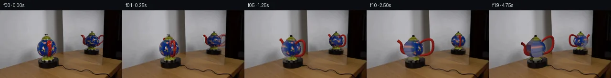

![首帧]()

Round 00
2026-11-05T13:24:50.061212+00:00像素候选变化代码 +362/−0inspection 更新
pixels 237e0c8bf960ab56 · code bfb2524101e2f8b9
查看本轮 generate.py 真实 diff
--- previous/generate.py
+++ current/generate.py
@@ -0,0 +1,362 @@
+"""Local pixel continuation: analytic rotating teapot, photo-derived texture.
+No external assets, models, image-view tools, or rendering engines are used.
+"""
+from pathlib import Path
+import json
+import math
+import numpy as np
+from PIL import Image, ImageDraw
+import cv2
+from scipy.ndimage import distance_transform_edt, gaussian_filter
+from artifact_io import save
+
+ROOT = Path(__file__).resolve().parent
+TMP = ROOT / '.tmp'
+TMP.mkdir(exist_ok=True)
+SOURCE = np.array(Image.open(ROOT / 'first_frame.png').convert('RGB'))
+W, H, SS = 256, 144, 3
+TW, TH = W * SS, H * SS
+
+# A pair of orthographic projections of the same upright object. The second
+# camera has reflected horizontal parity, as appropriate to the stationary mirror.
+VIEWS = [dict(cx=98.0, ground=99.2, scale=21.0, elev=.18, az=.17, parity=1,
+ rect=(55,140,42,108), clip=256),
+ dict(cx=192.3, ground=78.2, scale=15.0, elev=.16, az=-1.18, parity=-1,
+ rect=(159,217,40,85), clip=216)]
+HEIGHTS = np.array([0,.05,.1,.2,.35,.5,.7,.9,1.1,1.3,1.45,1.55,1.64,1.72])
+RADII = np.array([.36,.46,.56,.70,.83,.92,.98,1,.976,.90,.78,.68,.56,.50])
+
+
+def radius(h):
+ return np.interp(h, HEIGHTS, RADII)
+
+
+def lathe(hs, rs, material, segments=112):
+ hs = np.asarray(hs); rs = np.asarray(rs)
+ vertices=[]; norms=[]; uv=[]
+ dr=np.gradient(rs,hs)
+ for j,(h,r) in enumerate(zip(hs,rs)):
+ for i in range(segments+1):
+ th=2*np.pi*i/segments
+ vertices.append([r*np.sin(th),h,r*np.cos(th)])
+ n=np.array([np.sin(th),-dr[j],np.cos(th)])
+ norms.append(n/np.linalg.norm(n))
+ uv.append([th,h])
+ faces=[]
+ for j in range(len(hs)-1):
+ for i in range(segments):
+ a=j*(segments+1)+i;b=a+segments+1
+ faces.extend([(a,b,a+1),(a+1,b,b+1)])
+ return dict(v=np.array(vertices),n=np.array(norms),uv=np.array(uv),f=np.array(faces),mat=material)
+
+
+def tube(points, widths, material, rings=56, sides=12):
+ # Cubic spline only defines a local mathematical tube, not an external model.
+ from scipy.interpolate import CubicSpline
+ points=np.asarray(points,float); widths=np.asarray(widths)
+ s=np.linspace(0,1,len(points));t=np.linspace(0,1,rings)
+ pts=CubicSpline(s,points,axis=0)(t)
+ tangent=CubicSpline(s,points,axis=0)(t,1)
+ radii=CubicSpline(s,widths)(t)
+ vertices=[];norms=[];uv=[]
+ for j,(p,d,r) in enumerate(zip(pts,tangent,radii)):
+ d=d/np.linalg.norm(d)
+ a=np.array([1.,0,0]); b=np.cross(d,a);b=b/np.linalg.norm(b)
+ for i in range(sides+1):
+ th=2*np.pi*i/sides;n=a*np.cos(th)+b*np.sin(th)
+ vertices.append(p+r*n);norms.append(n);uv.append([th,t[j]])
+ faces=[]
+ for j in range(rings-1):
+ for i in range(sides):
+ a=j*(sides+1)+i;b=a+sides+1
+ faces.extend([(a,b,a+1),(a+1,b,b+1)])
+ # Closed base; open spout is handled separately as a dark recessed tip.
+ return dict(v=np.array(vertices),n=np.array(norms),uv=np.array(uv),f=np.array(faces),mat=material)
+
+
+BODY=lathe(np.linspace(0,1.72,44),radius(np.linspace(0,1.72,44)),1)
+LID=lathe([1.70,1.73,1.79,1.89,2.00,2.09,2.12], [.50,.51,.48,.37,.22,.08,.01],2)
+FOOT=lathe([-.34,-.29,-.24,-.10,.02],[.55,.63,.62,.53,.37],3)
+KNOB=lathe([2.08,2.12,2.17,2.22,2.24],[.08,.135,.145,.10,.02],4,segments=48)
+HANDLE=tube([[0,1.44,.70],[0,1.87,1.40],[0,1.80,1.99],
+ [0,1.14,2.10],[0,.52,1.82],[0,.20,.71]],
+ [.095,.11,.12,.125,.12,.10],5)
+SPOUT=tube([[0,.38,-.81],[0,.56,-1.16],[0,.90,-1.27],
+ [0,1.22,-1.28],[0,1.56,-1.66]], [.19,.18,.15,.125,.145],6,rings=45)
+# A small dark opening at the end of the spout, oriented along its tangent.
+def opening_mesh():
… diff truncated; 275 more lines …